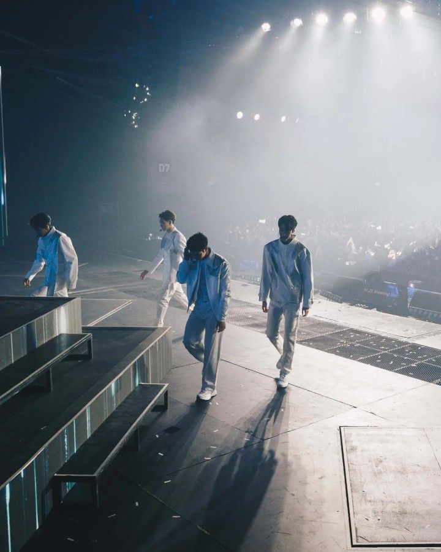
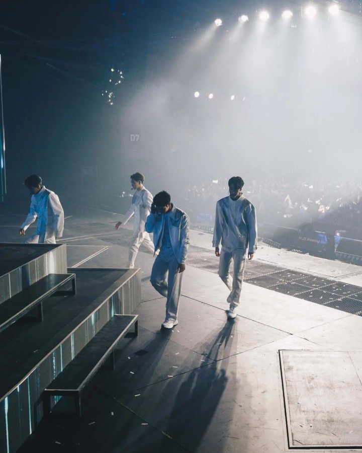

In Concert
Shooting Star Concert
25 July 2022
By dummy
Shooting Star Concert was a concert related to F4 Thailand: Boys Over Flowers and featuring Vachirawit Chivaaree, Metawin Opas-iamkajorn, Jirawat Sutivanichsak, and Hirunkit Changkham. It was held on July 23, 2022 at Union Mall in Bangkok, Thailand.Shooting Star Concert can be split into three parts. It opens with Vachirawit Chivaaree, Metawin Opas-iamkajorn, Jirawat Sutivanichsak, and Hirunkit Changkham performing "Shooting Star," while suspended on star-shaped platforms. Two cover songs follow; "Dao" and "Super Star," both of which are star themed. Next, each guy is given their own segment. A short pre-recorded video is shown before each, likely allowing time for the stage to be reset for the next. The guys each perform two cover songs. In between the songs, they address the audience, thanking them and explaining details behind the songs they chose. For example, Changkham reveals that he came up with the stage concept for his cover of "Honest," while Sutivanichsak jokingly refers to "Beside You" as his alter-ego song.
A montage of F4 Thailand clips are shown, before Chivaaree, Opas-iamkajorn, Sutivanichsak, and Changkham play "Who am I." They are dressed in costumes meant to evoke their characters. Opas-iamkajorn launches into "Silhouette" and is joined by Chanikan Tangkabodee. It transitions to Changkham's "Best Life" with surprise guest, Ployshompoo Supasap. Next, Sutivanichsak performs "In the Wind" with Yongwaree Anilbol, who departs as Tontawan Tantivejakul comes onstage. "In the Wind" transitions to Tantivejakul singing "One Last Cry." Sutivanichsak leaves and is replaced by Chivaaree. Once "One Last Cry" ends, he plays "Nighttime" with Tantivejakul. Gawin Caskey performs "You Mean the World" as the couples all gather around him. The guests say a few words to the audience before leaving.
In the third part, the four continue playing cover songs though in no particular order. The four open with "Fan Kao Khon Prot," followed by Sutivanichsak and Changkham playing "Sesaeng." Next, Chivaaree performs a duet, "Lost Stars," with Caskey. Afterwards, Chivaaree comments that he has wanted to perform on stage with Caskey for a long time. As Caskey departs, Chivaaree is joined by Opas-iamkajorn to sing "Chan Angkhan Phut Pharuehatsabodi Suk Sao Athit." Sutivanichsak and Changkham come onstage again to play "Sugar" with the other two. A behind the scenes montage is shown, before the four sing another song. They address the audience, thanking them again. The show ends with a final performance of "Shooting Star." They are suspended again, but this time above the audience.
 
